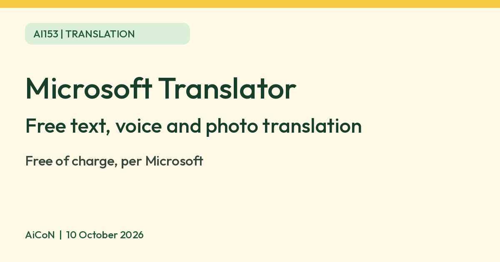

Microsoft Translator: a free app for text, voice and photo translation
Microsoft Translator is a free translation app with text translation in 100+ languages, plus speech and photo features in supported languages. Microsoft says the app is free of charge. Malayalam is listed for text and text-to-speech.

What it is
Microsoft Translator is a translation app and website from Microsoft. Its App Store listing says you can translate text, speech and text in images across more than 100 languages. Microsoft's app page also lists offline language packs for text and camera translation, and its release notes mention "neural voice fonts" for hearing the translated text read aloud.
Is it free
Yes. Microsoft's Android FAQ says "The Microsoft Translator App is free of charge." The App Store listing for India shows the app as Free and says you can translate "for free". We found no paid plan for the personal app. Data charges from your mobile network can still apply when you download language packs.
How to try it
- Install Microsoft Translator from your app store, or use the web version.
- Pick your two languages.
- Type or speak, or point the camera at a sign or menu.
- On Android, check which offline packs are offered and download both languages on Wi-Fi first. Offline support on the current iPhone version was not verified.
Malayalam: what the list actually says
Microsoft's language table marks Malayalam for text and text-to-speech (read aloud). It does not mark Malayalam for speech input or image translation. This is different from speaking Malayalam into the microphone. Hindi and Tamil are marked for speech too. Check the controls in your installed app before relying on a feature.
Limits to know
- Features differ by language. Microsoft's language page lists Malayalam for text and text-to-speech, with no speech or image column ticked. Hindi and Tamil also have speech. That page may be out of date, so check in the app.
- Microsoft's Android FAQ documents offline text and camera translation with downloaded supported packs, not voice. Do not assume every language has a pack or that current iPhone versions have the same offline features. Microsoft says the multi-device conversation feature has been retired.
- Machine translation makes mistakes. Do not rely on it alone for legal, medical or money papers.
- Microsoft does not call this an AI app on the pages we read, so we describe it as a translation app.
- We did not test it ourselves.
Frequently asked questions
Do I need to pay?
No. Microsoft says the app is free of charge.
Sources: Translator for Android FAQs, Translator languages, Translator for personal use, App Store India. Checked 10 October 2026.